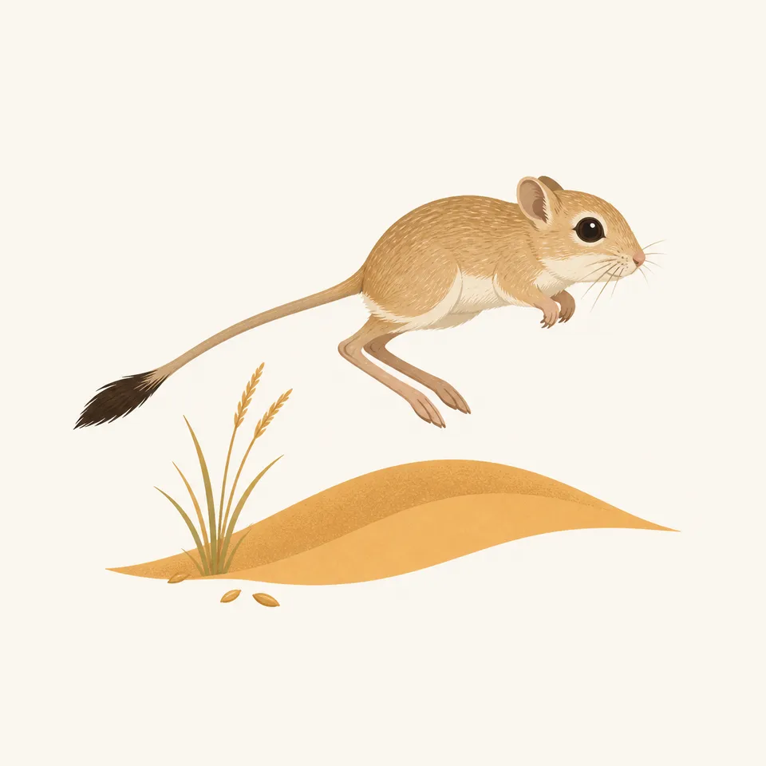
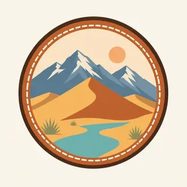

01
Star Dune
Seven hundred fifty feet from base to crest. The highest dunes above sea level are the ones closest to the mountains, not necessarily the ones with the greatest relief.
TrailMark Archive Edition
Colorado | Sangre de Cristo
The tallest dunes in North America sit against alpine peaks, with Medano Creek recycling the sand.
Archive No. TM-GRSA-018
National Park since 2004
Collection San Luis Valley
Park Overview
Herbert Hoover made Great Sand Dunes a national monument in 1932, protecting only the main dunefield. Congress expanded it into a national park and preserve in 2004, about four times the monument, so the watershed came with the sand.
NPS calls these the tallest dunes in North America. Star Dune rises 750 feet from base to crest. High Dune, on the first ridge, rises 699 feet from its base, and because it starts higher, its crest sits above Star Dune's.
The park and preserve cover about 150,000 acres. The main dunefield is about 30 square miles, six miles across at the widest and eight miles at the longest. Elevation runs from 7,520 feet near San Luis Lakes to 13,604 feet on Tijeras Peak. The visitor center is at 8,170 feet.
Emotional Thesis
The surprise is the combination. A dune against an alpine wall is the picture, and Medano Creek is the reason the picture stays put: when the creek flows, it carries sand back to the south edge of the field.
TrailMark treats the creek as part of the dune, not as a pretty extra. Without it, this is a pile. With it, the sand is on a loop.
Landscape Highlights
01
Seven hundred fifty feet from base to crest. The highest dunes above sea level are the ones closest to the mountains, not necessarily the ones with the greatest relief.
02
High Dune is the ridge most people aim at. In a straight line it is about a mile. NPS says a zigzag along the ridges takes the average person about an hour.
03
In an average year the creek starts in April, peaks in late May, and dries by late June. Surge flow, a rare way for water to move, is one of the reasons the park calls the system nationally significant.
Wildlife
The park describes a spread from high desert to alpine, with rare communities that are mostly still intact. The night sky is part of the same claim: little light, and a dunefield where vehicles do not roam.

01
There are no scorpions, venomous snakes, or quicksand on the dunes or elsewhere in this high park. That absence is as useful as a species list.
02
Summer sand can pass 150 degrees Fahrenheit. Hike early or late. Sandals are not enough if you must cross in the afternoon.
03
Pets may be in main day-use areas of the park and in the preserve, on a leash. They are no longer allowed in national park backcountry. Hot sand blisters paws.
Geology
The skin of the dunes changes constantly. Photographs from the late 1800s, set next to recent ones, show the major dunes keeping their outline. Vegetation around the field keeps new sand from marching in.
01
When Medano Creek is flowing it catches sand blowing east and returns it to the southern edge, where the creek disappears. Dry, the sand can blow back onto the dunes. That recycle built the field.
02
When the creek is dry, escape dunes can march east and bury ponderosa pines. The mountains are not a backdrop. They are the stop.
03
Lightning fuses sand into fulgurites. They are protected, like every other natural object here. Come down off the ridge when storms build.
The visitor center is generally 9 to 4:30 in winter, and closed on federal holidays then. The dunes themselves are open all night and all day. Confirm hours when you go.
This is creek season in an average year. Peak flow is late May. A heavy snow year can keep water into July. A dry year may never reach the main parking area.
The sand is the hazard. Early morning and evening are the walking hours. Afternoon heat sits close to the surface, hotter than the air temperature suggests.
The creek is usually gone. The peaks stay. This is when the recycle is mostly wind, and the escape dunes are easier to understand.
Photography
A dune ripple by itself could be any sand. The Sangre de Cristo, or Medano Creek on the surface of the dune, is the identifier.
01
Star Dune is the tall relief. The dunes nearest the mountains win on elevation above sea level. Say which one you photographed.
02
A summer afternoon frame that includes bare feet is a warning, not a mood. Shoot the ridge when the sand can be walked.
03
The wilderness is the point. The primitive road is a separate subject, around the edge, not on the crests.
Field Notes
The dune looks portable until you see the creek carrying the same sand back to the start.
TrailMark Field Notes

Badge Story
If the badge could be a coastal dune or a gypsum wave, it is wrong. The peak behind the sand is the mark.
Warm gold sand against a blue-gray alpine wall.
A thin creek line if it fits. The water is part of the system.
Distinct from White Sands, which is white and has no alpine wall.
Archive No.018
LocationSan Luis Valley
ReleaseAlpine Dune
Stewardship / Safety
The dunes and most of the adjacent mountains are designated wilderness. Fees, creek forecasts, and road status live on the Park Service site and change with the year.
Do not take vehicles onto the dunefield. ATVs are not allowed in the park or the preserve.
Leave fulgurites and every other natural object. Lightning-fused sand is not a souvenir.
Come down when storms approach. The dunefield is a target.
Hunting is a preserve rule, not a park rule. Read which unit you are standing in before you assume a prohibition or a permission.
Current conditions, fees, and alerts are on the National Park Service site.
Continue the Archive
White Sands is the gypsum field in the Tularosa Basin. Zion, already open, is the sandstone canyon contrast: walls instead of a pile.